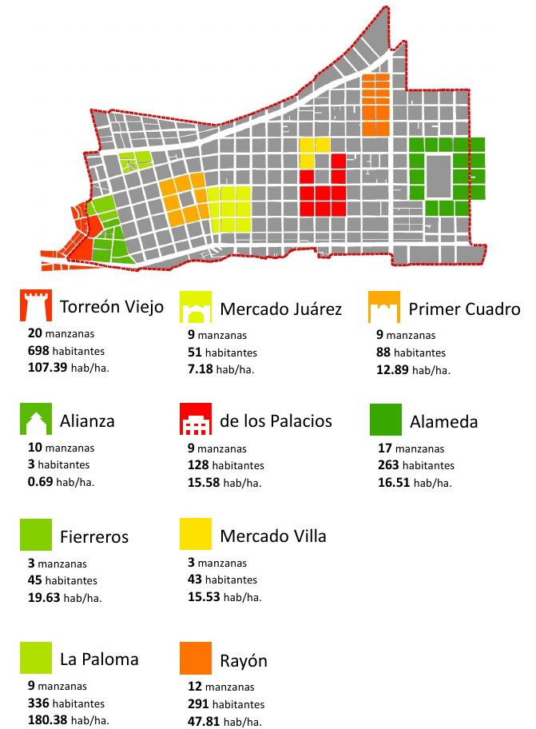

El Conjunto Histórico de la Ciudad de Torreón está delimitado por el polígono de 241 manzanas que conformaban el casco urbano en 1907 (fecha en que se elevó la Villa de Torreón al rango de ciudad), mediante el Decreto Municipal N.96 en Noviembre de 1996.
El crecimiento de la ciudad se dio a partir de la traza diseñada por el ingeniero Federico Wulff mediante una retícula cuadrada de manzanas regulares, que siguió hacia el oriente la vía de Ferrocarril Internacional Mexicano con ruta a Saltillo (actualmente bulevar Revolución).
Para finales del Siglo XIX, el casco histórico ya presentaba un crecimiento importante en sus sectores Primitivo Centro y Primer Fraccionamiento de Cobián. Sin embargo, estos crecimientos contenían a su vez barrios internos que se distinguieron por sus características urbanas y actividades predominantes.
Son diez los barrios identificados, que aunque han sufrido una perdida sostenida de identidad debido a la destrucción de sus edificaciones originales así como la migración de su población tradicional hacia otros sectores de la ciudad, éstos siguen presentando ciertas características urbanas y sociales que los conforma como barrios tradicionales dentro del centro histórico.
De poniente a oriente, los barrios son: Torreón Viejo, Alianza, de los Fierreros, La Paloma, Primer Cuadro, Mercado Juárez, de los Palacios, Mercado Villa, Rayón y Alameda.
Para la regeneración de estos barrios, son necesarios proyectos como mejoramiento de banquetas, arborización, instalación de mobiliario urbano y señalética con identidad propia del barrio, restauración de edificios histórico, etc.

Torreón Viejo
Sector que aunque en su mayoría se ubica fuera del polígono decretado del Conjunto Histórico de Torreón, es considerado como el sector que presentó los primeros asentamientos humanos de la ciudad. En él, se encuentran los restos de lo que fue la Hacienda del Torreón y la Compañía Harinera, hoy convertidos en museo y plaza comercial respectivamente. Actualmente, presenta usos habitacionales predominantemente.
Alianza
Toma su nombre de la Compañía Manufacturera “La Alianza” industria que produjo aceites y jabones y posteriormente cambió su actividad a molinos de harina. Se ubicó en los predios donde actualmente se encuentra el mercado de abastos que heredó el nombre y da identidad y actividad comercial al sector.
Fierreros
Zona comercial donde se llegó a ubicar en diferentes épocas el mercado de los “fierreros”, comerciantes semi-ambulantes que ofrecen mercancías muy variadas como herramientas, antigüedades, artículos del hogar, calzado, etc.
La Paloma
Barrio histórico residencial de tipo popular que ha mantenido su carácter habitacional con edificaciones, callejones y manzanas de pequeña escala.
Primer Cuadro
Corresponde a las 8 manzanas colindantes a la Plaza de Armas (originalmente llamada “Plaza del 2 de Abril”). Esta zona se ha desempeñado como el centro financiero, comercial y de servicios más importante de la ciudad.
Actualmente, conserva edificios con valor histórico-patrimonial de distintas épocas. A su vez, sufrió la demolición de edificios como el Cine Princesa (actual estacionamiento).
Mercado Juárez
Desde su fundación en 1907, el Mercado Juárez fungió como el nodo comercial más importante de la ciudad como alternativa el Mercado Alianza. Este “barrio” tradicional ha mantenido su carácter comercial destacando las zapaterías como actividad predominante.
De los Palacios
Llamado así por contener el Palacio Federal (1946) y la Presidencia Municipal (demolida). Actualmente se ubica la Plaza Mayor y el nuevo edificio de Presidencia. Las actividades predominantes son comerciales y de servicios.
Mercado Villa
El mercado fue demolido en 2010 para dar paso a la construcción de la Plaza Mayor. Actualmente, este sector conforma junto con el sector “de los Palacios” un nuevo nodo con identidad y actividades propias en torno a la nueva plaza y sus edificios gubernamentales.
Rayón
Este pequeño sector que históricamente ha sido residencial, está conformado por 12 manzanas de distintos tamaños. Se caracteriza principalmente por albergar casas-habitación unifamiliares con estilos arquitectónicos variados como el “vernáculo lagunero” de ladrillo, californiano y moderno.
Alameda
Es el único de los barrios enlistados que no pertenece al sector denominado Primitivo Centro, sino al primero de los 5 fraccionamientos que Feliciano Cobián fraccionó en 1898. Un año más tarde, el empresario Joaquín Serrano compró a Cobián cuatro manzanas que convirtió en la Alameda. El sector se caracterizó por albergar las casonas (o chalets) más lujosas de principios de Siglo XX.
Problemáticas
Al igual que el resto del Centro Histórico de Torreón, estos diez polígonos presentan diferentes problemáticas como:
Migración de su población: A lo largo del tiempo, la población del sector en general ha disminuido considerablemente. El barrio con menos población es el sector Alianza. De acuerdo con el Censo de INEGI en 2010, sólo cuenta con 3 habitantes, mientras Torreón Viejo presenta la mayor, con una población de 698.
Destrucción del patrimonio construido: La Dirección de Centro Histórico de Torreón establece que el INBA cuenta con 79 edificios catalogados con valor artístico, mientras que el INAH cuenta con 81 edificios con valor histórico. 23 de ellos han sido demolido en las últimas dos décadas, muchos de ellos ubicados en Centro Histórico.
Deterioro de la Infraestructura Urbana: Aunque cada uno de los barrios cuenta con diferentes estados de conservación de su infraestructura, se puede generalizar que en su mayoría presentan deterioro en sus banquetas, mobiliario urbano, servicios públicos etc.
Fuentes
- Gobierno del Estado de Coahuila, Ayuntamiento de Torreón. (2012). Programa Parcial de Desarrollo Urbano del Centro Histórico de Torreón. Torreón, Coah.
- Eduardo Guerra. (2006). Historia de Torreón. Torreón, Coah. Ayuntamiento de Torreón.